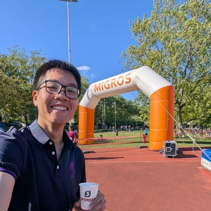

<div class="row flex-column-reverse flex-md-row py-2">
    <div class="col-md-8" id="bio">
        I am a Master's student in Computer Science, concurrently studying at the University of British Columbia and ETH Zurich. I work at the intersection of robotics, machine learning, and computer vision, with a focus on robot manipulation. I am currently supervised by Prof. Kelsey Allen.
        My specific research interest is using graph neural networks to simulate the dynamics of soft objects for deformable object manipulation.
        <p style="text-align:center">
            <a target="_blank" href="https://mailhide.io/">Email</a> &nbsp;/&nbsp;
            <a href="https://github.com/">GitHub</a> &nbsp;/&nbsp;
            <a href="https://twitter.com/">Twitter</a> &nbsp;/&nbsp;
            <a href="https://scholar.google.com/citations?user=">Google Scholar</a> &nbsp;/&nbsp;
            <a href="https://www.linkedin.com/in/">LinkedIn </a>
        </p>
    </div>
    <div class="col-md-4" style="z-index:4;">
        
    </div>
</div>

{% include publications.html %}